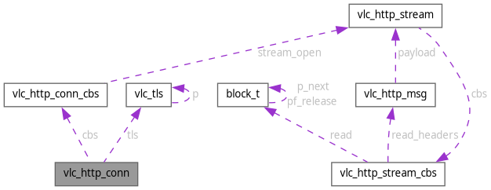

vlc_http_conn Struct Reference
#include <conn.h>
Collaboration diagram for vlc_http_conn:

Data Fields | |
| const struct vlc_http_conn_cbs * | cbs |
| struct vlc_tls * | tls |
Field Documentation
◆ cbs
| const struct vlc_http_conn_cbs* vlc_http_conn::cbs |
Referenced by vlc_h1_conn_create(), vlc_h2_conn_create(), vlc_http_conn_release(), and vlc_http_stream_open().
◆ tls
| struct vlc_tls* vlc_http_conn::tls |
The documentation for this struct was generated from the following file:
- modules/access/http/conn.h
Generated by